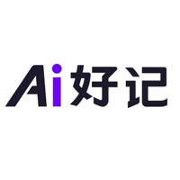

企业知识库与智能问答
知识，随问随用。

检索 → 引用 → 复核让知识找得到，回答有来源。
- 从哪里开始
- 一个部门、一类文档、一组代表性问题。
- 需要什么
- 有效文档、访问权限、知识更新责任人。
- 验证什么
- 引用准确性、检索耗时和实际使用反馈。
企业出题，平台聚力，专业伙伴一起落地。
连接业务、技术与交付，让专业力量围绕企业协作。
先诊断，小步验证，再交付。
聚焦具体工作，找到值得先做的一步。

检索 → 引用 → 复核让知识找得到，回答有来源。
从内容生产，到运营流程提效。
从维修知识检索、工单整理等辅助任务切入；先评估行业知识、资料权限与数据质量。
平台组织需求诊断、方案评审与项目协作，
专业团队实施，具体责任以合作约定为准。
确认数据与系统接入条件、交付清单、排除事项和变更方式。
明确企业业务负责人、项目统筹及技术实施角色，按里程碑评审。
先记录业务基线，再约定评测样本、指标、测量方法与维护责任。
平台连接资源，企业与服务方直接签署交付合同。
平台按约定承担实施管理、进度和交付协调。
需单独确认承接能力与合同范围，按合同承担交付成果责任。
结合需求复杂度、数据条件、人员投入与实施范围评估后报价。诊断、PoC、部署及持续服务分别确认交付物与费用，不把概念演示等同生产系统，也不预先承诺未经验证的收益。
根据业务理解、技术水平、项目经验与交付记录评估，匹配范围明确的任务。
在企业场景中验证产品适用性，明确集成条件、能力边界与服务方式。
连接行业专家、云与模型服务、数据服务和咨询机构，补齐项目所需能力。
从一次业务沟通开始。
本页面为服务方案 Demo，所有表单仅用于本地预览，不发送或保存资料。